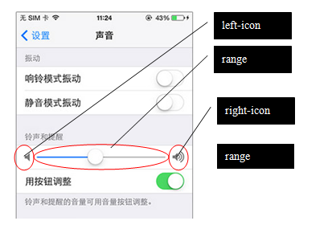

滑动条 : .range input[type="range"] range是HTML5新引入的元素，常用来进行连续值的调节： 例如： 滑动条的可视部件包括三部分：左右图标和中间的滑动条。 图标是可选的，当不用图标时，滑动条将占据整个宽度。 在ionic中，使用如下HTML模板声明滑动条：
注意：使用.range-{color}样式声明滑动条的配色方案，这主要影响滑轨的颜色。
设置
声音
铃音和提醒
用按钮调整